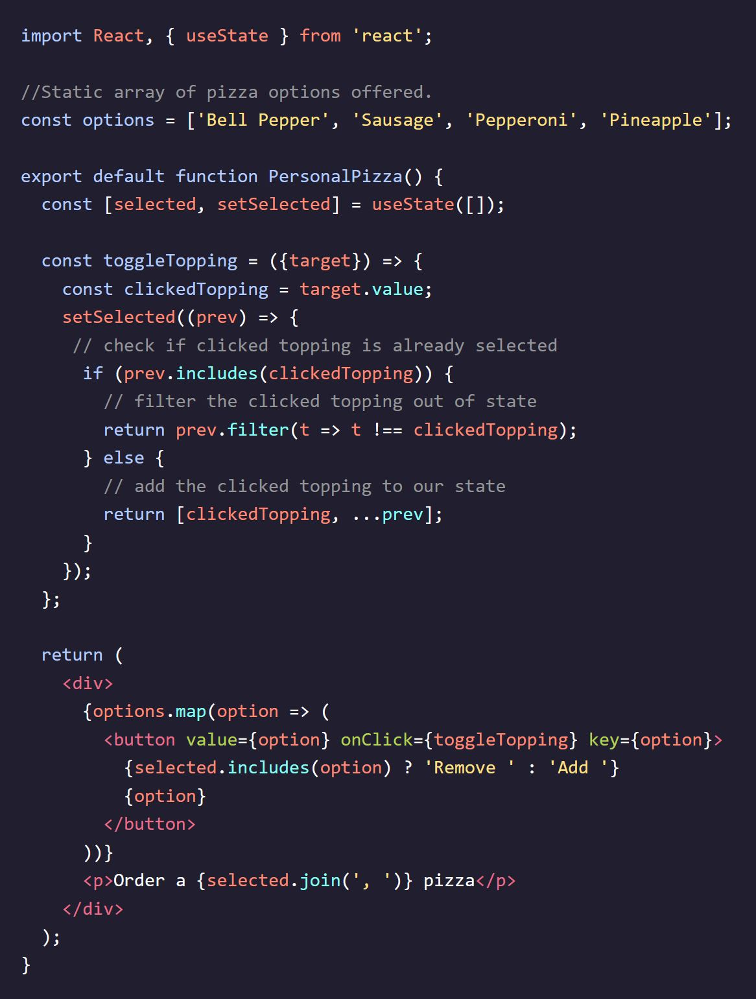
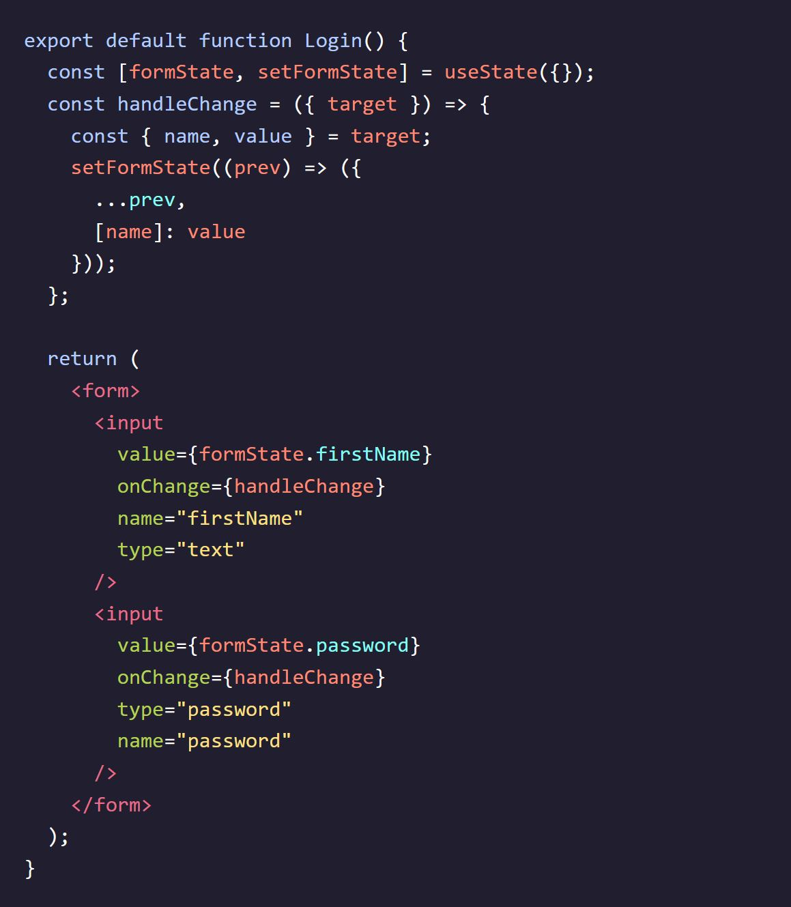

Codecademy - Learn React: Hooks
Notes taken while going through the Codecademy Learn React: Hooks course
The State Hook
Why Use Hooks
- React Hooks are functions that allow us to manage state and handle side effects in function components.
- They provide a way to add state and lifecycle functionalities to function components, making them more powerful and flexible.
- Using Hooks, we can manage the internal state of components directly within the function body.
- Hooks allow us to declare how our user interface should look based on the state.
- Some of the built-in Hooks provided by React include useState(), useEffect(), useContext(), useReducer(), and useRef().
- useState() allows us to add and manage state in function components.
- useEffect() enables us to handle side effects, such as fetching data or subscribing to events, after the component has rendered.
- useContext() allows us to access and use context within a function component.
- useReducer() provides a way to manage state using a reducer function similar to how it's done in Redux.
- useRef() gives us a mutable ref object that persists across re-renders and allows us to access and modify DOM elements or other values.
- By using Hooks, we can write cleaner and more concise code and take advantage of the benefits of function components while still having access to state and side effects.
Update Function Component State
- The State Hook is commonly used for building React components.
- To use the State Hook, we import it from the React library using object destructuring.
- When useState() is called, it returns an array with two values: the current state and a state setter function.
- The current state represents the current value of the state, while the state setter function is used to update the state's value.
- We can track the current state and modify it by assigning the array values to local variables using array destructuring.
- In a function component, we can use the State Hook to manage state.
- The example component "Toggle" demonstrates the usage of the State Hook.
- The state setter function, setToggle(), is called by onClick event listeners to update the value of the state.
- By calling the state setter function with the next state value as an argument, we can update the state and trigger a re-render of the component.
- useState() allows React to keep track of the current state value from one render to the next.
Initialize State
- The State Hook in React allows us to manage the value of any primitive data type or data collections like arrays and objects.
- We can initialize state by calling the useState() function and passing the initial value as an argument.
- The ToggleLoading() function component in the example uses a boolean data type for the state variable "isLoading" to represent whether data is loading or not.
- The state setter function, setIsLoading(), is used to update the value of the state variable.
- To start the component with isLoading set to true, we can pass the initial value as true: const [isLoading, setIsLoading] = useState(true);
- The useState() function has three effects on the component
- During the first render, the initial state argument is used.
- When the state setter is called, React ignores the initial state argument and uses the new value.
- When the component re-renders for any other reason, React continues to use the same value from the previous render.
- If we don't pass an initial value to useState(), the current value of the state during the first render will be undefined. It's preferable to explicitly initialize the state, and if the value is not available during the first render, we can pass null instead of leaving it undefined.
Use State Setter Outside of JSX
- We can use the State Hook to manage the changing value of a string in a text input field.
- We use array destructuring to create a local state variable (e.g., email) and a local setter function (e.g., setEmail) using the useState() function.
- The email variable holds the current state value, and the setEmail function is used to update the value.
- We define an event handler function (e.g., handleChange) that is called when the onChange event is triggered on the input field.
- The event handler updates the value of email by calling the setEmail function with the new value obtained from the event.
- In JSX, we bind the value of the input field to the email state variable, and we set the onChange event listener to the handleChange function.
- It's a good practice to separate the logic of event handlers from JSX to improve readability, testability, and maintainability.
- We can simplify the event handler by directly passing the value from the event (e.g., event.target.value) to the setEmail function.
- Object restructuring can be used to extract the target property from the event parameter, further simplifying the code.
- All the variations of the event handler code snippets behave the same way, and the choice depends on personal preference and code style.

Set From Previous State
- React state updates are asynchronous, which means there can be scenarios where portions of your code run before the state finishes updating.
- To ensure that you are working with the most up-to-date state value, it is recommended to update state using a callback function.
- The callback function is passed as an argument to the state setter function (e.g., setCount) instead of passing a new value directly.
- By using the callback function approach, you can access the previous state value and compute the next state based on it.
- In the example code, the increment event handler is called when a button is clicked. Inside this function, the state is updated using setCount with a callback function.
- The callback function takes the previous count value as an argument (prevCount), and the value returned from the callback is used as the next state value.
- By using the callback function (prevCount => prevCount + 1), we increment the count value by 1 based on the previous count value.
- While it would work in this example to directly call setCount(count + 1), using the callback approach is considered safer in certain scenarios.
Arrays in State
- JavaScript arrays are a suitable data model for managing and rendering lists of JSX elements. 
- In the given example, there are two arrays:
- The options array contains the names of pizza toppings available. It is defined outside the component as static data.
- The selected array represents the currently selected toppings for a personal pizza. It is managed within the component's state using the useState hook.
- The options array remains static and does not change. It is defined outside the function component to prevent unnecessary re-creation on each component re-render.
- The .map() method is used on the options array to render a button for each topping in the JSX.
- The selected array is initialized as an empty array in the component's state.
- When a button is clicked, the toggleTopping() event handler is called. It retrieves the clicked topping from the event object.
- When updating an array in state, it is important to replace the previous array with a new array rather than adding new data to the existing array.
- The spread syntax (...prev) is used to create a new array that includes all the elements from the previous array. This ensures that any information from the previous array is retained in the new array when updating the state.
- The toggleTopping() function checks if the clicked topping is already selected. If it is, the topping is filtered out of the state array. If it is not selected, the topping is added to the state array using the spread syntax along with the previous elements.
- The JSX renders a button for each topping, with the button label changing based on whether the topping is selected or not.
- The selected toppings are displayed in a 'p' element using the selected.join(', ') method to format the array as a comma-separated string.
Objects in State
- State can also be used with objects in React.
- Grouping related variables into an object can be helpful. 
- Use the useState hook to initialize the state object (formState) with an empty object {}.
- Create an event handler function (handleChange) to update the state based on user input.
- Destructure the name and value properties from the target object within the event handler.
- Update the state using the state setter function with a callback: setFormState((prev) => ({ ...prev, [name]: value })).
- The spread syntax (...prev) copies the previous state object and then updates the specific key-value pair with [name]: value.
- Reuse the event handler for multiple input fields by using the name attribute of the input tag to identify the input triggering the change event.
- When the input values are updated, the handleChange function is called.
- Wrap the new state object in parentheses when using the state setter callback: setFormState((prev) => ({ ...prev })).
- The square brackets around name enable using the string value stored in the name variable as a property key.
Seperate Hooks for Seperate States
- While it can be helpful to store related data in a data collection (like an array or object), it's also beneficial to create separate state variables for data that change independently.
- Managing dynamic data becomes easier when keeping the data models as simple as possible.
- Unlike this:
- Instead of using a single object to hold all related state, create multiple state variables based on the values that tend to change together.
- Separate state variables make the code simpler, easier to read, test, and reuse across components.
- Rewriting the example: Create individual state variables for currentGrade, classmates, classDetails, and exams.
- Each state variable can have its own state setter function, making it straightforward to update specific values without the need for complex code.
- Organizing data in separate state variables allows for more flexibility in managing and organizing dynamic data within components.
- Hooks provide the freedom to choose the most suitable data organization approach based on the specific needs of the application.
Review: State Hooks
- With React, we feed static and dynamic data models to JSX to render a view to the screen.
- Hooks are used to “hook into” the internal component state for managing dynamic data in function components.
- We employ the State Hook using the code below. The currentState references the current value of the state and initialState initializes the value of the state for the component’s first render.
- State setters can be called in event handlers.
- We can define simple event handlers inline in our JSX and complex event handlers outside of our JSX.
- We use a state setter callback function when our next value depends on our previous value.
- We use arrays and objects to organize and manage related data that tend to change together.
- Use the spread syntax on collections of dynamic data to copy the previous state into the next state like so: setArrayState((prev) => [ ...prev ]) and setObjectState((prev) => ({ ...prev })).
- It’s best practice to have multiple, simpler states instead of having one complex state object.